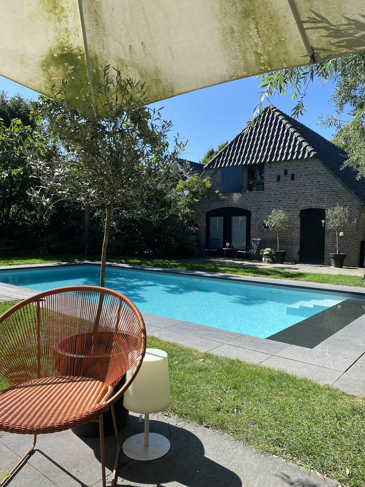

Ontdek de regio
Ravenstein
Ravenstein is een schilderachtig vestingstadje aan de Maas met een rijke historie. Dwaal door de smalle straatjes, bewonder de historische gevels en proef de sfeer van eeuwen geschiedenis. Met slechts 4.000 inwoners behoudt het een intiem en authentiek karakter.
Te doen
Ontdek het prachtige rivierenlandschap op de fiets. Kilometers aan fietsroutes door uiterwaarden, langs dijken en door pittoreske dorpjes.
Verken het vestingstadje met zijn historische stadsmuren, de Luciakerk en gezellige terrassen. Een stukje geschiedenis op loopafstand.
Op slechts 20 minuten rijden. Bezoek de Sint-Janskathedraal, het Noordbrabants Museum of maak een rondvaart door de Binnendieze.
De oudste stad van Nederland, ook op 20 minuten. Geniet van de bruisende binnenstad, het Valkhof en de Waalkade.
Diverse wandelroutes door de uiterwaarden van de Maas, het Land van Maas en Waal en de Brabantse natuur.
Proef Brabantse gastvrijheid in lokale restaurants en cafés. Van sterrenrestaurants tot gezellige eetcafés — alles binnen handbereik.
Bereikbaarheid